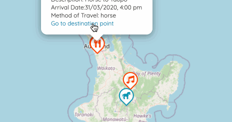

Target:

So I want to be able to let the user see the other end of the travel when they click “Go to the departure (destination) point”. This means I need to have reference to the Marker of the other end of the travel.
My first failed naive attempt:
1 | travel.fromMarker = <Marker |
This did not even feel right!
Keep in mind, however, that the JSX doesn’t return a component instance! It’s just a ReactElement: a lightweight representation that tells React what the mounted component should look like.
– From Refs to Components
React createRef() and ref
What I need is refs:
Refs provide a way to access DOM nodes or React elements created in the render method.
– From Refs and the DOM
Here’s what I did to make the pair of Markers:
1 | class TravelMarkerPair extends React.Component { |
So I am able to refer to the component with this.toMarker and this.fromMarker, and then I can fire the leaflet event of clicking them by this.toMarker.current.fireLeafletEvent('click') when user clicks the link from its sibling.
Finding out the methods available to the component
I did not find the method fireLeafletEvent very easily. I tried click() but was told that this.toMarker.current.click is not a function. I then thought if it was because React component did not have click(), and tried this provided in a stackoverflow post:
1 | const mouseClickEvents = ['mousedown', 'mouseup']; |
I was told that this.toMarker.current.dispatchEvent was not a function either.
Yihao helped me with logging all the properties available of a Javascript object.
This will print ALL the properties, including inherited ones and own ones:
1 | for (const p in component) { |
This will not print inherited properties:
1 | console.log(Object.getOwnPropertyNames(component)); |
This will only print functions:
typeof object[property] == ‘function’
1 | for (const p in component) { |
This is how I found there is a fireLeafletEvent method that suits my need.